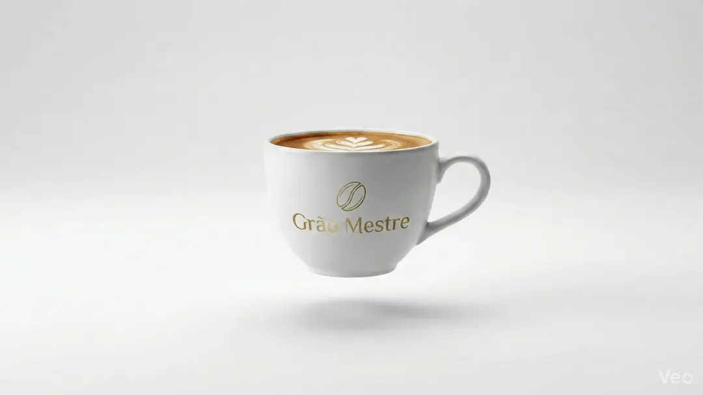

🛒
☰

Redefinimos o equilíbrio entre aroma, corpo e acidez. Feito para paladares que exigem a perfeição da torra artesanal em cada extração.
Nossa arquitetura de fluxo proprietária sincroniza a deposição de tinta em tempo real.